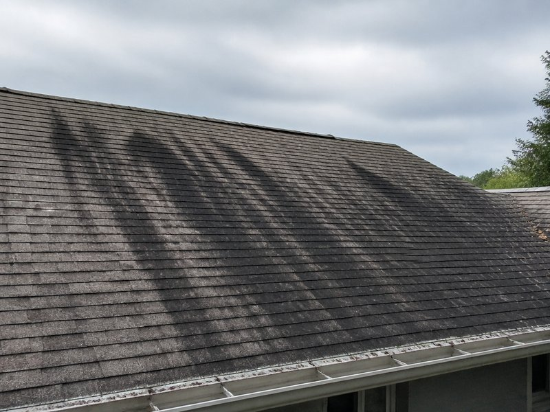

Roof Cleaning
Remove algae, black streaks, and organic buildup safely with soft wash roof cleaning that helps extend shingle life.
- Shingle-safe soft wash
- Algae, moss, and staining removal
- Roof brightening for better curb appeal
Dunedin roof cleaning specialists
Tampa Bay Power Clean delivers premium soft wash roof cleaning and house washing across Dunedin and Clearwater. Get a fast local quote and see same-house before/after roof cleaning proof from local homes.
Core services
Roof cleaning and house washing are the highest-value services for Dunedin homeowners. Every detail on this page points buyers to roof cleaning, house washing, and same-house before/after proof that turns visitors into calls.
Remove algae, black streaks, and organic buildup safely with soft wash roof cleaning that helps extend shingle life.
Refresh siding, trim, lanais, and exterior surfaces using gentle cleaning chemistry that removes mildew, pollen, and dirt.

Before After
After
Every section is built to remove friction and answer the most important questions for Dunedin homeowners. It is designed to feel more like a refined local brand than a generic contractor page.
How it works
The best Dunedin exterior cleaning pages reduce friction with a straightforward quote process, clear service explanation, and a strong local call to action.
Tell us whether you need roof cleaning or house washing and share the property details for the right recommendation.
Share the Dunedin or Pinellas County location so we can confirm availability, timing, and the right equipment for the job.
Receive a free local estimate with a clear scope, pricing, and next steps — no confusing service bundles.
Service areas
This page is optimized for Dunedin searches while also supporting nearby markets like Clearwater, Palm Harbor, Largo, and Safety Harbor.
Local authority
A strong local page uses clear proof, service focus, and a direct quote path to reduce hesitation and build confidence.
Local Dunedin inquiries get prompt attention and follow-up so homeowners know they are working with a responsive local team.
Safe cleaning methods are used on roofs, siding, trim, and exterior surfaces to avoid damage while restoring appearance.
The page avoids generic service overload and keeps the focus on the two highest-value offerings for this market.
FAQ
The answers are written to support local search intent, reduce hesitation, and move visitors toward a quote.
Yes. Tampa Bay Power Clean specializes in roof cleaning for Dunedin homes and businesses, removing algae, black streaks, and organic buildup with safe soft wash methods.
Yes. Our house washing process is designed to remove mildew, pollen, dirt, and grime from siding, trim, lanais, and exterior hard surfaces without harsh pressure.
Most local inquiries receive a quote or follow-up the same day. Call now or request a free quote through the page to get priority Dunedin scheduling.
We prioritize Dunedin and serve Clearwater, Palm Harbor, Largo, Safety Harbor, Tarpon Springs, and other Pinellas County communities.
Ready for a cleaner roof and home?
Call now or request your free local quote, and discover how our roof cleaning before and after results protect your home. The quickest route to a trusted Dunedin soft wash quote.